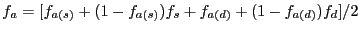
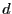
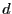

|
 |
 |
A Manual for use of PyPedal
A software package for pedigree analysis |
 |
 |
 |
7.4.2 Ancestral Inbreeding
Ballou Ballou1997 described ancestral inbreeding, the probability that an individual inherited an allele that had undergone inbreeding in the past at least once, in a study of purging recessives and inbreeding in conservation genetics. This is a different idea than the usual coefficient of inbreeding as an individual that is not inbred may carry alleles that have been exposed to substantial inbreeding; recall that an individual may have inbred parents, but if the parents are not related to one another then the resulting offspring will not be themselves inbred. It has been proposed that animals deriving from highly inbred lines may be less susceptible to inbreeding depression because deleterious recessive alleles have been purged from the population, but literature reports on extant populations are inconsistent. Ancestral inbreeding is calculated using a recursion equation as:

where  is the ancestral inbreeding coefficient for an individual,
is the usual coefficient of inbreeding, and subscripts
and 
represent sires and dams, respectively. Calculations are from oldest to youngest in the population and require as inputs only coefficients of inbreeding.
is the ancestral inbreeding coefficient for an individual,
is the usual coefficient of inbreeding, and subscripts
and 
represent sires and dams, respectively. Calculations are from oldest to youngest in the population and require as inputs only coefficients of inbreeding.
Suwanlee et al. SuwanleeBSC2007 extended the concept by presenting a gene-dropping approach [MacCluer, VandeBerg, Read, and RyderMacCluer
et al.1986] for calculating ancestral inbreeding, as well as modifying Ballou's equation to account for non-independence between individual inbreeding coefficients and ancestral inbreeding coefficients. Gene dropping is also used in PyPedal for calculating founder genome equivalents (see: Section 7.4.6), and the code used by the pyp_metrics.dropped_ancestral_inbreeding() and pyp_metrics.effective_founder_genomes() routines are similar, although the former drops an arbitrary number of unlinked biallelic loci through the pedigree while the latter drops only a single locus.
Release 2.0.3, documentation updated on November 29, 2005
Revised May 15, 2012.
See About this document... for information on suggesting changes.